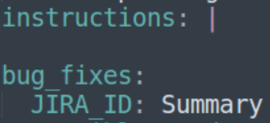
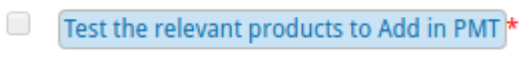
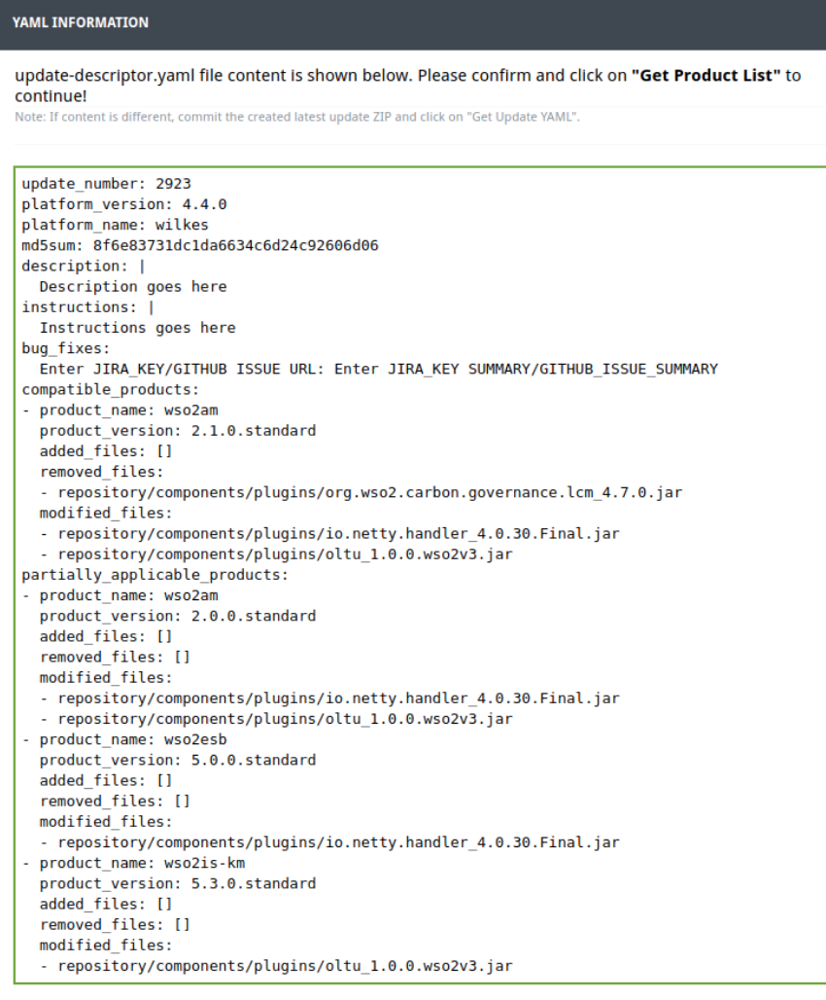
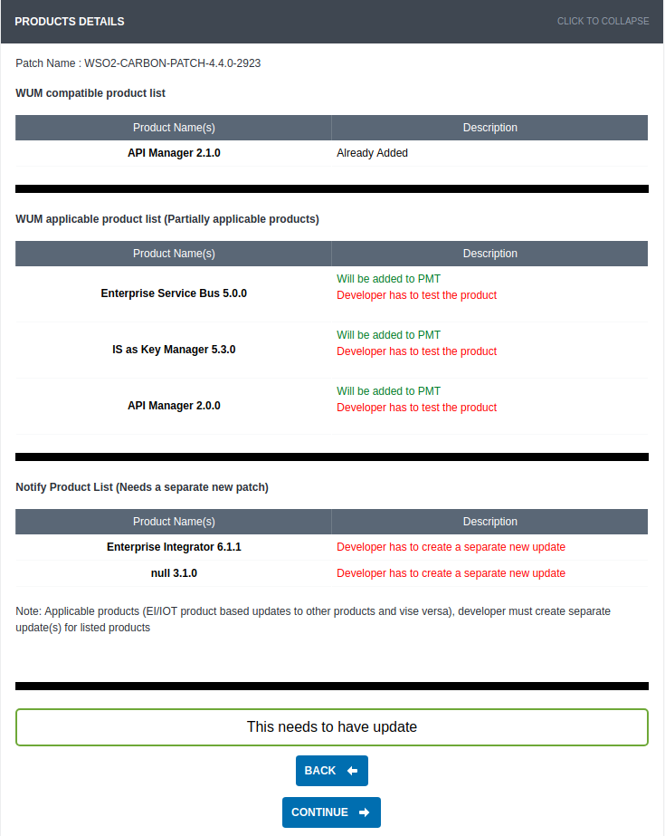
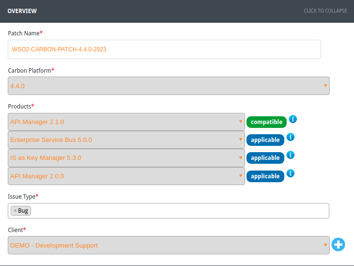

Developer Guide
The WSO2 Update Creator tool (wum-uc) is designed to help you create and validate updates that are compatible with WUM. It is written in GO language. As a result, you can compile the code directly to machine code without using the JVM. Cross compiling is also possible.
This document describes how to use the Update Creator tool to create an update directly or convert a patch to an update.
Before you begin, here are the descriptions of the files used in this guide. The wum-uc tool generates both these files.
 {.expand-control-image}update-descriptor3.yaml
file
{.expand-control-image}update-descriptor3.yaml
file
This is a newly introduced file that contains details about the update
that complies with WUM 3.0.0 . Every update has an
update-descriptor3.yaml file. It has details about the
products that this update is fully or partially compatible with, the
file changes (added, removed, or modified), descriptions, and
instructions.
A sample file looks like the following:
update_number: 2922 platform_version: 4.4.0 platform_name: wilkes md5sum: 8f6e83731dc1da6634c6d24c92606d06 description: | Details about the update for wso2am-2.1.0.standard Details about the update for wso2am-2.0.0.standard Details about the update for wso2esb-5.0.0.standard Details about the update for wso2is-km-5.3.0.standard instructions: | Instructions for wso2am-2.1.0.standard Instructions for wso2am-2.0.0.standard Instructions for wso2esb-5.0.0.standard Instructions for wso2is-km-5.3.0.standard bug_fixes: JIRA_ID: Summary compatible_products: - product_name: wso2am product_version: 2.1.0.standard added_files: [] removed_files: - repository/components/plugins/org.wso2.carbon.governance.lcm_4.7.0.jar modified_files: - repository/components/plugins/io.netty.handler_4.0.30.Final.jar - repository/components/plugins/oltu_1.0.0.wso2v3.jar partially_applicable_products: - product_name: wso2am product_version: 2.0.0.standard added_files: [] removed_files: [] modified_files: - repository/components/plugins/io.netty.handler_4.0.30.Final.jar - repository/components/plugins/oltu_1.0.0.wso2v3.jar - product_name: wso2esb product_version: 5.0.0.standard added_files: [] removed_files: [] modified_files: - repository/components/plugins/io.netty.handler_4.0.30.Final.jar - product_name: wso2is-km product_version: 5.3.0.standard added_files: [] removed_files: [] modified_files: - repository/components/plugins/oltu_1.0.0.wso2v3.jar
In WUM 2.0.0, we used update-descriptor.yaml . The reason to introduce a
new file in WUM 3.0.0 is because WUM 3.0.0 s upports partial updates.
For example, in the above sample, the update numbered 2922 gets fully
applied to wso2am-2.1.0.standard product while it gets
partially applied to wso2am- 2.0.0.standard ,
wso2esb-5.0.0.standard, and wso2is-km-5.3.0.standard
products.
You should manually fill in the description, instructions, and the
bug_fixes fields of the update-descriptor3.yaml file
according to the products listed in it. W hen filling the description
and instructions sections of an update that gets fully or partially
applied to multiple products, use paragraphs to separate the description
per product. Be careful not to break the initial indentation though as
that results in a malformed YAML.
Given below is an example of a description that has multiple paragraphs:
description: | Details about the update for wso2am-2.1.0.standard, this paragraph only contains details regarding wso2am-2.1.0.standard Details about the update for wso2am-2.0.0.standard, this paragraph only contains details regarding wso2am-2.0.0.standard Details about the update for wso2esb-5.0.0.standard, this paragraph only contains details regarding wso2esb-5.0.0.standard Details about the update for wso2is-km-5.3.0.standard, this paragraph only contains details regarding wso2is-km-5.3.0.standard
Here's an example of a malformed YAML. The malformation is caused by YAML treating the entire sentence 'Details about the update for wso2am-2.0.0.standard, this paragraph only contains details regarding wso2am-2.0.0.standard' as a key.
The same applies to the instructions field as well.
description: | Details about the update for wso2am-2.1.0.standard, this paragraph only contains details regarding wso2am-2.1.0.standard Details about the update for wso2am-2.0.0.standard, this paragraph only contains details regarding wso2am-2.0.0.standard
If there are no bug fixes, enter N/A in the JIRA_ID
and Summary fields. I f there are no instructions,
leave a blank line as follows:
{width="150"}
Note that you do not manually modify the added_files and
modified_files sections like in the previous
versions of the tool. They are added automatically by the tool.
In cases where the version of a JAR file is updated, remove the old JAR file and provide path to the removed file when prompted by the wum-uc tool .
 {.expand-control-image}update-descriptor.yaml
file
{.expand-control-image}update-descriptor.yaml
file
This file will be discontinued when WUM 2.0.0 gets deprecated.
The update-descriptor.yaml file is used to identify update details by WUM 2.0.0. It will get created by the wum-uc tool along with the previous YAML file until wum 2.0.0 gets deprecated. You will be prompted to provide inputs for applies_to, bug_fixes, and description fields.
Given below is a sample update-descriptor.yaml file:
update_number: 2922 platform_version: 4.4.0 platform_name: wilkes applies_to: wso2das-3.1.0 bug_fixes: JIRA_ID: Summary description: Details about the update for wso2das-3.1.0 file_changes: added_files: [] removed_files: - repository/components/plugins/org.wso2.carbon.governance.lcm_4.7.0.jar modified_files: - repository/components/plugins/io.netty.handler_4.0.30.Final.jar - repository/components/plugins/oltu_1.0.0.wso2v3.jar
If there are no bug fixes, enter N/A in the JIRA_ID
and Summary fields.
Let's start using the Update Creator tool.
- Download the tool
- Set the environment variables
- Build the tool (optional)
- Initialize the tool
- Create an update directly
- Commit the created ZIP file to SVN
- Convert old patches to WUM-updates
Download the tool
Go to the release section of GitHub to download the tool.
Set the environment variables
-
If you want to run the tool from anywhere, add it to the system PATH variable. For example, this is the command for Ubuntu:
export PATH=$PATH:[ENTER_PATH_TO_BIN_HERE]
-
Set the LICENSE_MD5 environment variable:
LICENSE_MD5=84d7cad403ae420940cd0f62bec1b520
Build the tool (optional)
Follow the steps below if you want to built the tool yourself.
- Download GO from its official website and install it. You need GO to compile and run this tool.
-
Run the following command to download and install the packages along with their dependencies:
go get -u github.com/wso2/update-creator-tool
-
Open the
update-creator-tool/constant/constants.gofile of the cloned repository and replace the value of the constantBASE64_ENCODED_CONSUMER_KEY_AND_SECRETwith the following:BASE64_ENCODED_CONSUMER_KEY_AND_SECRET= "N01ENDRMM21HcVhrOTlXTDM2N19na1lPNTgwYTpVaEQxSzlwbzVDUF9BaExLUFhUS3Bqc0FMbU1h"
-
Run
build.shto generate the executable files for various OS/architecture combinations. These files are located in thebuild/target/directory. - Extract the relevant ZIP file to your OS/architecture.
- Find the executable wum-uc file in the bin directory.
Initialize the tool
-
Run the following command to initialize wum-uc:
wum-uc init
-
When prompted, give your WSO2 username and password.
-
Note that the .wum-uc directory is created. Let's call it in this guide.
Create an update directly
Follow below steps to create an update.
-
Create a directory (let's call this ) and copy the following files that need to be in your update:
- All updated files (e.g., binary and resource files).
- The instructions.txt (required only till WUM 2.0 gets depreciated).
Note: Do not copy
LICENSE.txtandNOT_A_CONTRIBUTION.txtas they get automatically added bythe tool. -
Run the following command to create the update:
wum-uc create <update_dir> <dist_loc> // <update_dir>: the path to <UPDATE_LOCATION> // <dist_loc>: path to the latest WUM-updated distribution that you obtained by pointing WUM to the live environment (i.e., 'url: https://api.updates.wso2.com')
-
Give the relevant update number when prompted.
-
When prompted, select the relevant platform version that you are creating the update for.
Select the platform name and version from following: 1. wilkes 4.4.0 2. hamming 5.0.0 Enter your preference [1/2]:
-
When prompted for removed files:
- Press 'n' if no files are removed from this update.
- Press 'y' for adding removed files and enter the path of the removed files relative to .
-
When you are done with adding removed files, press 'Enter' without any inputs.
-
When prompted, confirm that you are done adding inputs by pressing 'y' for yes or 'n' for no.
-
Enter the following when prompted. Note that these are required only until WUM 2.0 gets depreciated.
- The names of product/s for the 'applies to' field.
- The JIRA keys and summaries relevant to the update. (Press 'Enter' when you are done).
- The description for the created update.
-
Note that the update ZIP is created in the location from where you execute wum-uc. The tool displays a summary of the update creation.
 {.expand-control-image}Click to
see an example...
{.expand-control-image}Click to
see an example...Here's an example:
'update-descriptor.yaml' has been successfully created in '/home/kasun/Documents/wum-uc/demo'. Optional resource file 'instructions.txt' not copied. 'update-descriptor3.yaml' has been successfully created in '/home/kasun/Documents/wum-uc/demo'. 'WSO2-CARBON-UPDATE-4.4.0-2923.zip' successfully created. Your update applies to the following products Compatible products : [wso2am] Partially applicable products : [wso2esb wso2is-km wso2am] Notify products : [wso2ei wso2iot] Manually fill the 'description','instructions' and 'bug_fixes' fields for above products in the update-descriptor3.yaml located inside the created 'WSO2-CARBON-UPDATE-4.4.0-2923.zip'
As shown in the
Notify productsfield of the above summary, the update can be applied to the products wso2ei and wso2iot as well. However, due to the differences in the directory structures of the above products, it is the responsibility of the developer to create seperate updates for them in theNotify productsfield.
Commit the created ZIP file to SVN
Before commiting the file, do a manual inspection of its directory
structure and the entries in the update-descriptor3.yaml and
update-descriptor.yaml files. For Wilkes, the update repository
location is
https://svn.wso2.com/wso2/custom/projects/projects/carbon/wilkes/updates.
- When changing the lifecycle state of the created update from Development to Staging, you see a newly added check as follows. Click it.{width="200"}
- You get directed to a seperate page as follows:
- Click GET UPDATE YAML to see the YAML information as follows:
{width="500"} - Verify the YAML information and click GET PRODUCT LIST to see
the product details as follows:
{width="550"} - Verify the product details and click CONTINUE.
- You get a page as follows. Update it with the products relevant for
your update number.
{width="600"}
Some samples for the UPDATE_LOCATION directory are shown
below:
 {.expand-control-image}Sample 1
{.expand-control-image}Sample 1
├── axis2_1.6.1.wso2v16.jar ├── instructions.txt ├── LICENSE.txt ├── NOT_A_CONTRIBUTION.txt ├── synapse-core_2.1.5.wso2v2.jar ├── update-descriptor3.yaml └── update-descriptor.yaml
 {.expand-control-image}Sample 2
{.expand-control-image}Sample 2
├── LICENSE.txt ├── NOT_A_CONTRIBUTION.txt ├── oauth2.war ├── update-descriptor3.yaml └── update-descriptor.yaml
 {.expand-control-image}Sample 3
{.expand-control-image}Sample 3
├── LICENSE.txt ├── NOT_A_CONTRIBUTION.txt ├── org.wso2.carbon.apimgt.hostobjects_5.0.3.jar ├── store │ ├── modules │ │ └── subscription │ │ ├── list.jag │ │ └── module.jag │ └── site │ └── blocks │ └── subscription │ └── subscription-list │ ├── ajax │ │ └── subscription-list.jag │ └── block.jag ├── update-descriptor3.yaml └── update-descriptor.yaml
 {.expand-control-image}Sample 4
{.expand-control-image}Sample 4
├── bin │ └── tomcat-juli-7.0.69.jar ├── lib │ └── endorsed │ └── tomcat-annotations-api-7.0.69.jar ├── LICENSE.txt ├── org.wso2.carbon.tomcat_4.4.3.jar ├── tomcat_7.0.59.wso2v3.jar ├── tomcat-catalina-ha_7.0.59.wso2v1.jar ├── tomcat-el-api_7.0.59.wso2v1.jar ├── tomcat-jsp-api_7.0.59.wso2v1.jar ├── tomcat-servlet-api_7.0.59.wso2v1.jar ├── NOT_A_CONTRIBUTION.txt ├── update-descriptor3.yaml └── update-descriptor.yaml
Convert old patches to WUM-updates
- Sample 1: Basic scenario
- Sample 2: Update with resource files
- Sample 3: When the patch has config changes
Sample 1: Basic scenario
Let's convert the WSO2-CARBON-PATCH-4.4.0–0001.zip to the WUM update
format.
- Extract the
WSO2-CARBON-PATCH-4.4.0–0001.zip. We call this location<PatchDir>. -
Note that the structure of the is as follows:
PatchDir └── WSO2-CARBON-PATCH-4.4.0–0001 ├── LICENSE.txt ├── NOT_A_CONTRIBUTION.txt ├── patch0001 │ └── hazelcast_3.5.0.wso2v1.jar ├── README.txt └── wso2carbon-version.txt
All the file changes are in
<PatchDir>/WSO2-CARBON-PATCH-4.4.0–0001/patch0001. -
Copy the content of the
patch0001directory toWSO2-CARBON-PATCH-4.4.0–0001directory (parent directory ofpatch0001directory) and deletepatch0001directory. - Delete wso2carbon-version.txt, LICENSE.txt, and
NOT_A_CONTRIBUTION.txtfiles from the above directory. -
Note that the new directory structure looks as follows:
── WSO2-CARBON-PATCH-4.4.0–0001 ├── hazelcast_3.5.0.wso2v1.jar ├── README.txt
-
Follow the update creation process mentioned above to create the update.
- Note that if successful, the c reated
WSO2-CARBON-UPDATE-4.4.0–0001.zipshould be located at the current working directory. You can validate this using thewum-uc validatecommand.
Sample 2: Update with resource files
Follow the steps below to convert WSO2-CARBON-PATCH-4.4.0–0237.zip to WUM update format.
- Extract the WSO2-CARBON-PATCH-4.4.0–0237.zip file. We call this location .
-
Note that the structure of the is as follows. Read the README.txt for more information about the patch.
WSO2-CARBON-PATCH-4.4.0-0237 ├── bin │ └── tomcat-juli-7.0.69.jar ├── lib │ └── endorsed │ └── tomcat-annotations-api-7.0.69.jar ├── LICENSE.txt ├── patch0237 │ ├── org.wso2.carbon.tomcat_4.4.1.jar │ ├── tomcat_7.0.59.wso2v3.jar │ ├── tomcat-catalina-ha_7.0.59.wso2v1.jar │ ├── tomcat-el-api_7.0.59.wso2v1.jar │ ├── tomcat-jsp-api_7.0.59.wso2v1.jar │ └── tomcat-servlet-api_7.0.59.wso2v1.jar └── README.txt
-
Move the content of the
patch0237directory to theWSO2-CARBON-PATCH-4.4.0–0237directory and deletepatch0237. - Delete the
LICENSE.txtfile from the WSO2-CARBON-PATCH-4.4.0–0237 directory. -
Note that the new directory structure should as follows:
WSO2-CARBON-PATCH-4.4.0-0237 ├── bin │ └── tomcat-juli-7.0.69.jar ├── instructions.txt ├── lib │ └── endorsed │ └── tomcat-annotations-api-7.0.69.jar ├── org.wso2.carbon.tomcat_4.4.1.jar ├── README.txt ├── tomcat_7.0.59.wso2v3.jar ├── tomcat-catalina-ha_7.0.59.wso2v1.jar ├── tomcat-el-api_7.0.59.wso2v1.jar ├── tomcat-jsp-api_7.0.59.wso2v1.jar ├── tomcat-servlet-api_7.0.59.wso2v1.jar
-
Follow the update creation process mentioned above to create the update.
- Note that, if successful, the WSO2-CARBON-UPDATE-4.4.0–0237.zip file will be created in the current working directory. You can validate it using the wum-uc validate command.
Sample 3: When the patch has config changes
Follow the steps below to convert the WSO2-CARBON-PATCH-4.4.0–0478.zip file to new WUM update format when the patch has configuration changes.
-
Extract the patch and move the content of the patch0478 directory to the parent directory.
WSO2-CARBON-PATCH-4.4.0-0478 ├── LICENSE.txt ├── NOT_A_CONTRIBUTION.txt ├── README.txt ├── synapse-core_2.1.5.wso2v2.jar └── update-descriptor.yaml
-
Note in the
README.txtthat there are configuration changes added in this patch.You need to add these instructions in an
instructions.txtfile until WUM 2.0 gets officially deprecated. After it is deprecated, same content above should be added to the instructions field of the newupdate-descriptor3.yamlfile after successfully creating the update.{.expand-control-image}Expand
to see a sample instructions.txt file...When the org.wso2.carbon.identity.mgt.IdentityMgtEventListener is enabled via <EventListeners> configuration in repository/conf/identity/identity.xml, it engages CacheClearingUserOperationListener which clears the policy cache. This should be configurable through <EventListeners> configuration. This step is optional, and is only required if you need to disable the immediate cache invalidation. Copy following xml content into identity.xml as the very first element under the <EventListeners> element. <EventListener type="org.wso2.carbon.user.core.listener.UserOperationEventListener" name="org.wso2.carbon.identity.entitlement.listener.CacheClearingUserOperationListener" orderId="6" enable="false" />
-
Note that the new directory structure looks as follows:
WSO2-CARBON-PATCH-4.4.0-0478 ├── instructions.txt ├── README.txt └── synapse-core_2.1.5.wso2v2.jar
-
Follow the update creation process mentioned above to create the update.
- Note that, if successful, the
WSO2-CARBON-UPDATE-4.4.0–0478.zipfile will be created in the current working directory. You can validated it using thewum-uc validatecommand.
Attachments:
 {width="8" height="8"}
overview-products.png
(image/png)
{width="8" height="8"}
overview-products.png
(image/png)
 {width="8" height="8"}
Product-details.png (image/png)
{width="8" height="8"}
Product-details.png (image/png)
 {width="8" height="8"}
get-updated-YAML.png
(image/png)
{width="8" height="8"}
get-updated-YAML.png
(image/png)
 {width="8" height="8"}
YAML-description.png
(image/png)
{width="8" height="8"}
YAML-description.png
(image/png)
 {width="8" height="8"}
blank-line.png (image/png)
{width="8" height="8"}
blank-line.png (image/png)
 {width="8" height="8"}
image2018-8-10_17-37-18.png
(image/png)
{width="8" height="8"}
image2018-8-10_17-37-18.png
(image/png)
{kind=link}
{kind=link}
{kind=link}
{kind=link}
{kind=link}
{kind=link}